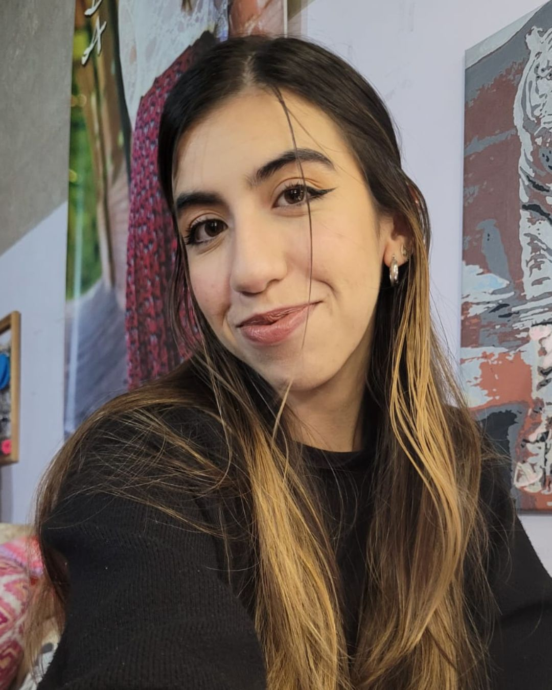
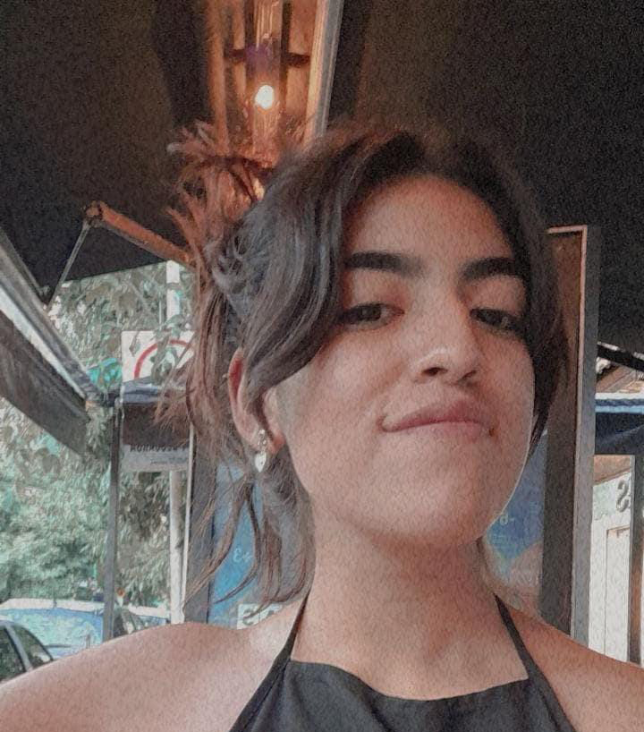

El proceso de traducción no es únicamente una actividad lingüística: es un ejercicio continuo de análisis, toma de decisiones y construcción de sentido. Las profesoras de la carrera nos remarcan la importancia de ser críticos en la traducción, no solo al momento de decidir la terminología o las estructuras sintácticas, sino también más allá: al establecer los tiempos de traducción, aceptar encargos, buscar información, entre otras situaciones.
Por ello, con emoción y un poco de temor ante lo inexplorado, durante el primer cuatrimestre de 2025, aceptamos la propuesta de dos de nuestras profesoras de formar parte de un grupo de estudiantes que se encargarían de traducir el estatuto de nuestra universidad y las leyes 24.496 y 24.521. El encargo provenía de la embajada de Irlanda en el marco de la realización de un proyecto intercultural con nuestra universidad. Por cuestiones de tiempo y con la idea de acercar a los estudiantes a un encargo de traducción real, nuestras profesoras María Pibernus y Mariela Santoro, expusieron la oportunidad de colaborar en el proyecto en sus respectivas clases.
Luego de haber definido quiénes participarían del proyecto y dividirnos en grupos, debíamos definir con claridad los límites de entrega y organización temporal de las etapas. La organización fue la siguiente: diez estudiantes divididos en dos grupos: uno compuesto por seis integrantes, dedicado a la traducción del Estatuto de nuestra amada UNLa y otro de cuatro integrantes, dedicado a la traducción de las leyes 24.496 y 24.521. Desde el primer momento, trabajamos a contrarreloj: debíamos entregar la traducción de los tres textos en un mes, en medio de nuestra cursada y en época de parciales. Las profesoras y tutoras nos advirtieron que la improvisación o la falta de coordinación podía generar retrasos, duplicación de esfuerzos, inconsistencias y problemas de calidad; porque coordinar un proyecto de tal magnitud no solo implica fijar fechas: también requiere establecer objetivos concretos para cada etapa, definir roles, anticipar dificultades y prever instancias de revisión. En consecuencia, cada grupo de traducción estableció plazos fijos para las tres etapas del proyecto: investigación, traducción y edición.
El siguiente desafío surgió en la etapa de investigación. Si bien las estructuras de las universidades irlandesas y argentinas no son extremadamente distintas, existen diferentes términos que tuvieron sus complicaciones. Uno de ellos fue la palabra ‘claustro’, que la Real Academia Española define como “junta que interviene en el gobierno de una universidad” y que encontramos con frecuencia en el estatuto de la UNLa. En inglés y en el sistema universitario irlandés, esta noción de ‘grupo formado por’ se ve reflejada por el término ‘representatives’. Por otro lado, la palabra ‘docencia’ resultó ser un término más complejo de lo que anticipamos. En inglés el término ‘teaching’ (la forma más clásica para traducir ‘docencia’) es polisémico, por lo que en determinadas partes del texto donde se hablaba sobre “instituciones donde se preparan a los estudiantes para ejercer la docencia” terminábamos con frases cacofónicas y absurdas como: “a place to teach teaching”.
Si bien resolvimos las cuestiones terminológicas por medio de textos paralelos y el consejo de las docentes, el estilo de redacción de determinados artículos probó ser lo más complicado de reproducir, ya que queríamos mantener la rigidez de la estructura jurídica española, pero que a su vez tuviese su propia fluidez.
Más allá de los desafíos traductológicos que encontramos en los distintos textos, estamos de acuerdo en que lo más desafiante radicó en las etapas previas y posteriores a la traducción. Una de las grandes ventajas de esta era digital (afianzada por la pandemia) es la conectividad, que aprovechamos al 100%. Enviamos infinidades de mensajes de texto con preguntas sobre signos de puntuación, terminología, o archivos que podrían llegar a ser de utilidad; realizamos incontables videollamadas para mantenernos al tanto de nuestras traducciones y dudas; pero la herramienta más significativa fue el Google Docs que utilizamos en conjunto y en simultáneo, donde cada uno podía ver qué decisiones había tomado su par y el progreso general del proyecto.
La mayoría de las experiencias que como estudiantes escuchamos de nuestros profesores y graduados es que el proceso de traducción suele concebirse como una actividad individual y silenciosa. Sin embargo, en este proyecto experimentamos lo contrario: seis traductores debieron acordar qué término utilizar, qué estructura sintáctica resultaba más conveniente, entre otras cuestiones. Con la etapa de traducción y edición individual de cada integrante finalizada, debimos unificar todo el texto, lo que resultó ser una tarea ardua y larga, pero extremadamente necesaria. La división de segmentos, la unificación de criterios y las incontables revisiones del texto constituyen la labor artesanal de la que fuimos parte durante el primer cuatrimestre de este año. La puesta en común no fue solo una instancia técnica; también fue una instancia formativa que nos permitió observar la diversidad de enfoques dentro de un mismo texto.
A pesar de todas las complicaciones, desafíos y trasnoches de traducción, estamos sumamente contentas con el producto final y con el trabajo en equipo y el profesionalismo de todos los integrantes. Este proyecto no solo nos permitió poner a prueba nuestros conocimientos y todo aquello que aprendimos en estos años dentro de la carrera, sino que también nos relacionamos más con otros compañeros, mejoramos nuestras habilidades a la hora de trabajar en equipo y confirmamos lo que siempre nos remarcan nuestros profesores: comprender y aplicar estos principios no solo mejora la calidad de la traducción, sino que también forma traductores más críticos, más organizados y más conscientes.
En nuestra opinión, no podríamos imaginarnos una mejor oportunidad de inserción en el campo laboral (ya que, técnicamente, para nosotros, fue nuestro primer encargo “real”) que trabajar con nuestros pares y compañeros, para un encargo que beneficiaría a nuestra Universidad y bajo la tutela de nuestras experimentadas docentes. En resumidas cuentas, esta experiencia resultó ser extremadamente fructífera y satisfactoria. Si en un futuro se dan las condiciones para que un proyecto como este vuelva a realizarse, incentivamos a todos los estudiantes a participar voluntariamente. Puede parecer intimidante, especialmente al tener en cuenta que es un proyecto para la universidad, en medio de un cuatrimestre y todo lo que eso conlleva, ¡pero no tengan miedo! El resultado, luego de tanto esfuerzo, tiempo y dedicación, es increíblemente satisfactorio y la experiencia es irremplazable.
Agradecemos a los integrantes de la carrera del Traductorado Público de la UNLa por impulsar a que se creen estos espacios poco usuales de aprendizaje; especialmente a nuestras profesoras y tutoras Trad. Pública María Pibernus y Mgtr. Trad. Pública Mariela Santoro, no solo por toda la ayuda que nos brindaron durante todas las etapas del proyecto, sino también por realizar la edición final y alentarnos y motivarnos a lo largo de toda la carrera. Destacamos la labor y compartimos con orgullo este logro con nuestros compañeros y compañeras: Brenda Garelli, Maia Caglia, Florencia Larocca, Fiorella Montenegro, Claudia Bauman, Milagros Sosa, Gerónimo Valdéz y Constanza Peluffo, sin ellos todo hubiera sido mucho más complicado y, por sobre todo, más aburrido.
Sobre las autoras

Camila Fichera tiene 24 años y actualmente está cursando las materias del último año de la carrera de Traductor Público en la Universidad Nacional de Lanús. A la par de la carrera universitaria, ejerce su segunda pasión: la docencia. Si bien su propósito es especializarse en el área de la traducción académica, mantiene abiertas las puertas a otras áreas de la traducción que puedan despertar su curiosidad y enriquecer su desarrollo profesional.

Melina Montiel tiene 25 años y se encuentra cursando el último año de la carrera de Traductor Público en la Universidad Nacional de Lanús. Actualmente trabaja en el departamento de operaciones de una empresa radicada en Estados Unidos, pero también se desempeña como intérprete médica. Espera poder dedicarse a la traducción societaria y a la interpretación de conferencias.